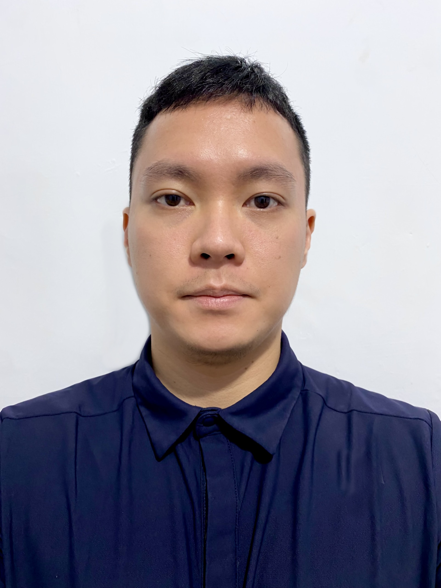

Robert Wijaya

PhD Student, SUTD in Singapore
News / Activities
- 05/2024 I am now at SUTD for five months as a visiting scholar/researcher working on data-centric and efficient multimodal LLMs advised by Prof. Ngai-Man Cheung.
- 12/2023 I have graduated with a Master's degree in Machine Learning and Computer Vision (MMLCV) from ANU.
- 07/2023 In semester 2, 2023 I enroll in four courses, they are COMP8604 Research Project, COMP8610 Computer Graphics, COMP8539 Adv. Topics in Computer Vision, and COMP8420 Neural Networks, Deep Learning, and Bio-Inspired Computing.
- 02/2023 In semester 1, 2023 I enroll in four courses, they are COMP8604 Research Project, COMP8600 Statistical Machine Learning, COMP6340 Networked Information Systems, and COMP8110 Managing Software Projects in a System Context
- 11/2022 During this semester holiday (Nov'22 to Feb'23), I serve as a Research Intern (remote) at NUS-HCI Lab Singapore
- 08/2022 In semester 2, 2022 I serve as one of the course representatives for COMP6670 Intro to Machine Learning.
- 07/2022 In semester 2, 2022 I enroll in four courses, they are COMP6710 Structured Programming, ENGN6627 Robotics, COMP6670 Intro to Machine Learning, and COMP8536 Advanced Topics in Deep Learning for Computer Vision.
- 03/2022 In semester 1, 2022 I will be a student representative for two courses: Computer Vision ENGN6528, and Programming for Scientists COMP6730
- 02/2022 In semester 1, 2022 I will take four courses which are Programming for Scientists COMP6730, Professional Practice ENGN6250, Computer Vision ENGN6528, and Engineering Data Analytics ENGN8535.
- 11/2021 I will start my Master's degree in Machine Learning and Computer Vision (MMLCV) at the Australian National University in February 2022.
Short Bio
Robert is currently a PhD student at the Singapore University of Technology and Design, where he is honored to be advised by Prof. Ngai-Man Cheung. Previously, he received his Master's degree from the Australian National University (ANU). His research interests span computer vision, multimodal LLMs, and data-centric AI. He is open to potential research collaborations and can be contacted via email.
Recent Works
Multimodal Preference Data Synthetic Alignment with Reward ModelRobert Wijaya, Ngoc-Bao Nguyen, Ngai-Man Cheung
Preprint
arXiv | GitHub | HuggingFace
Denoising Diffusion Model for Smoke Segmentation
Robert Wijaya, Weihao Li, Nick Barnes
Master's Thesis
PDF | GitHub | Poster
Misc
- Australia Awards Scholarship recipient from Australia government, fully-funded scholarship to pursue a Master's degree in Australia.
- Completed ~24 MOOC courses, e.g. deep learning, data science, data analysis, machine learning (See the full list here).
- Leisure activities: swimming, cooking, reading books.
I can be contacted via email, feel free to contact me at: Robert_Wijaya@mymail.sutd.edu.sg